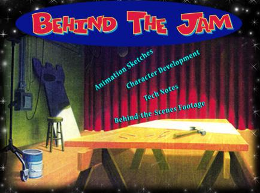

Go behind the scenes of one of the most high-tech, high-concept, high-flying films ever made. See the early sketches of all-new animated characters! Learn how megastar Michael Jordan got a big kiss from classic wisecracking hero Bugs Bunny! Watch as Michael Jordan plays basketball against many strange men in green suits and facemasks -- who never appear in the film!